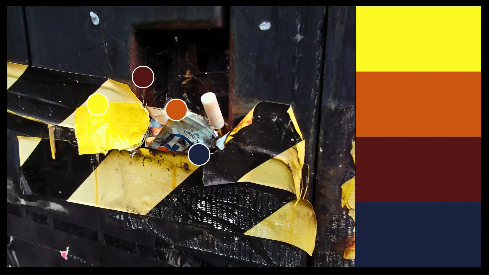
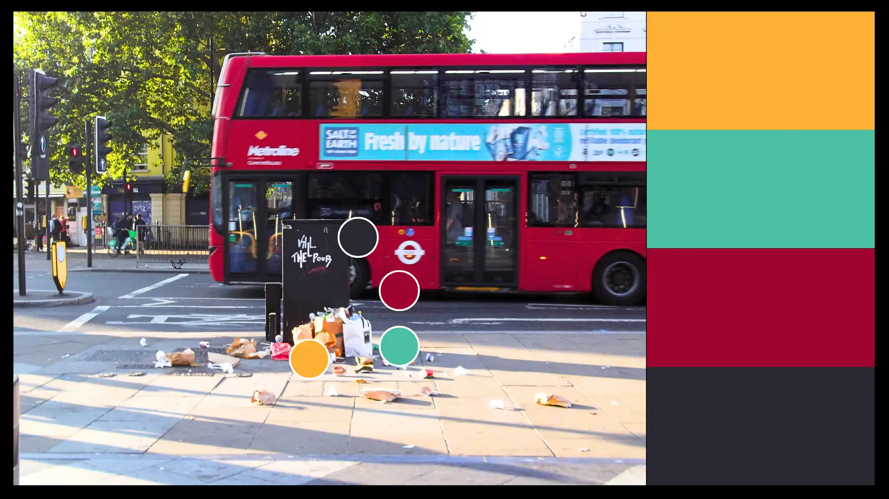
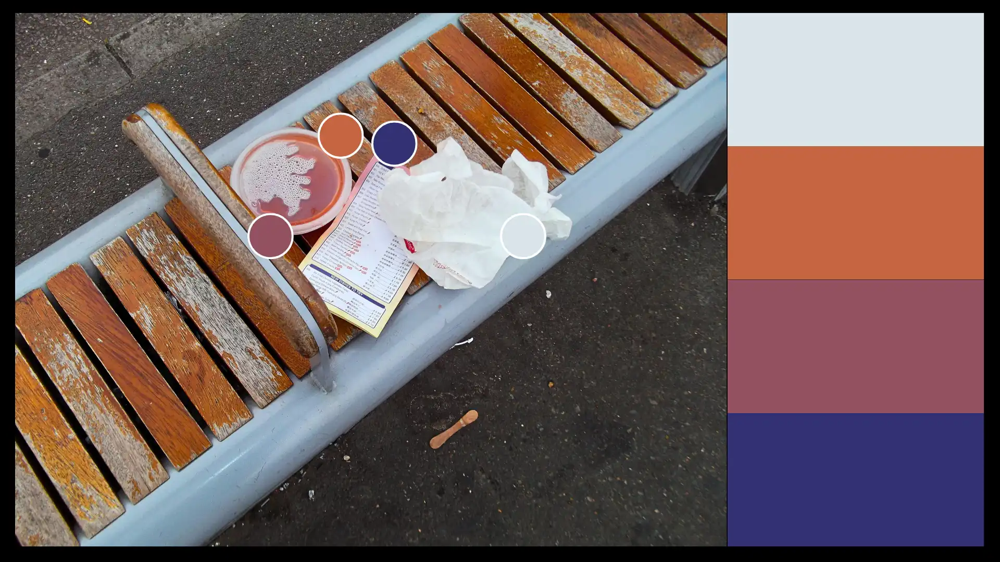
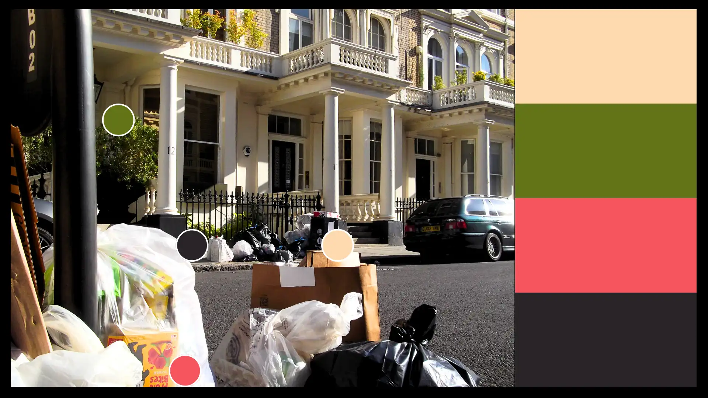

In this project I make use of colour to experiment with repulsion and finding beauty against the odds.

If we hold onto repulsion a little longer, beauty begins to emerge.
Beauty’s subjectivity implies that our relationship with it can change quite fluidly. I ask the viewer to look at these images of trash and pollution with curiosity about their reactions. The key intent is to ask ourselves the question: what could someone possibly like about this? Even if you feel repulsion, I hope you stay with that feeling a little longer and give an answer. Any answer. Composition, colour, light, subject, political meaning… these are some of the feelings that were stirred within me when I decided to press the shutter.

Whether looking at what we consume or discard, the method always carries a political message.
The path towards changing our perspective lies in curiosity. I believe that we can grow to enjoy much more of what we detest by asking people around us what they like about it. For instance, as one of many who are impacted by seasonal affective disorder in the dark winter months, asking Canadian and Scottish friends what they like about winter continuously shifts my perspective. “What’s your favourite thing about January?” Bit by bit, I notice their answers in daily life and I am glad that, even if they don’t apply to me, I can be happy for them. Then something might click! The light that filters through January skies is much thinner, much more subtle, it spreads like a veil over the landscape. And now I’m hooked! “Maybe I like January”; a crack in the wall of hate towards January appears, the light gets through, then the cold tits and robins begin their dance. Suddenly the previously dead trees stand impossibly tall, with imposing elegance, their branches reaching out in search of opportunity, preparing themselves for spring, much like me in my own life.

There are stories in everything, if we chose to listen.
We are lucky that our capability for beauty, much like creativity, grows as we use it. Noticing how the colours of packaging play in the light behind a semi-transparent plastic bag may engage us in the same way a beautiful rose does. I do wish there was less trash and more flowers all around London, but when I am greeted with delight by either sight at the turn of a corner, I get to enjoy the gift of seeing beauty against the odds.
